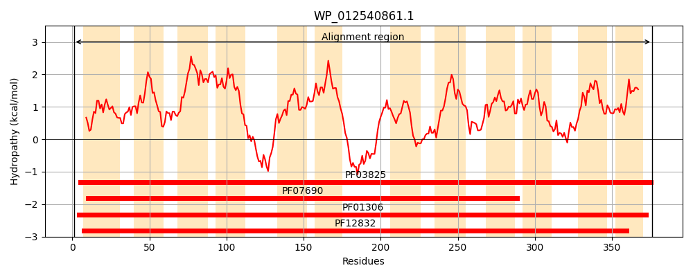
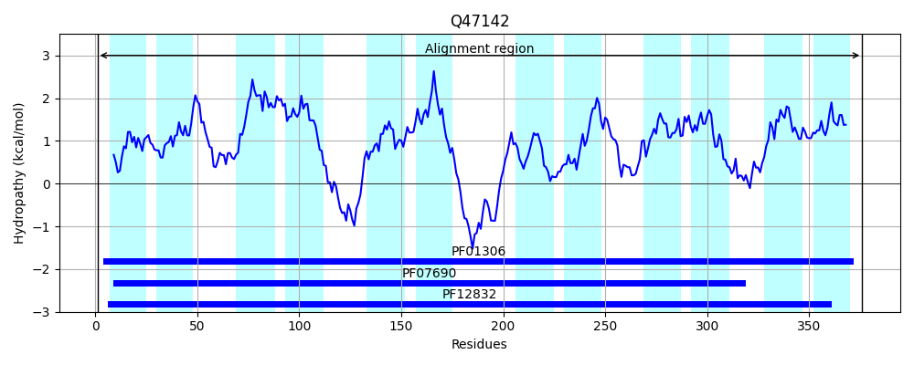
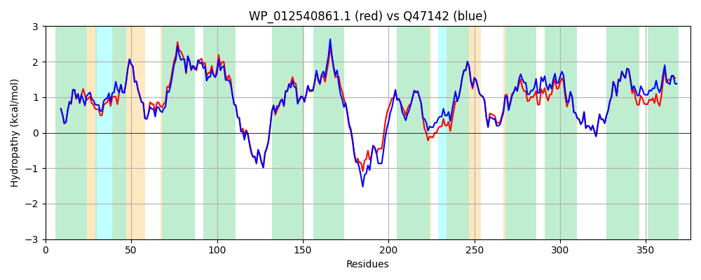

Hit Accession: Q47142
Hit TCID: 2.A.1.27.1
Hit Description: gnl|BL_ORD_ID|13709 gnl|TC-DB|Q47142|2.A.1.27.1 Probable 3-phenylpropionic acid transporter - Escherichia coli.
Mach Len: 376
e:0.000000
Query TMS Count : 12
Hit TMS Count: 12
TMS-Overlap Score: 11.050000
Predicted Substrates:CHEBI:48526;hydratropic acid
BLAST Alignment:
Score: 1670 , Bit scores: 647 bits, E-value: 0.0e+00, Alignment length: 376, Percentage identity: 83
Query: 1 MVLHSTRWLALSYFTYFFSYGIFLPFWSVWLAGNGLTPETIGLLLGAGLVARFLGSLLIAPRVSDPSRLIAALRVLALLTLLFALAFWVGSHVAWLLAVIIGFNLFFSPLVPLTDALANTWQKQITMDYGRVRLWGSIAFVIGSALTGKLVSLFDYRAILLMLSLGVASMLLGMLLKPSVMPHGESRQQQGAGLTAWLTLVRQSWRFLACVCLLQGAHAAYYGFSAIYWQQAGYSASAVGYLWSLGVVAEVVIFALSKKVFRRFSARDLLLLSAVCGLIRWGLMGWTTALPGLLLAQILHCGTFTVCHLAAMRYIAARQGSEVIRLQAVYSAVAMGGSIAIMTVFAGFLYQHLHQGVFWVMALLTIPALIIRPKAV 376
MVL STRWLAL YFTYFFSYGIFLPFWSVWL G GLTPETIGLLLGAGLVARFLGSLLIAPRVSDPSRLI+ALRVLALLTLLFA+AFW G+HVAWL+ V+IGFNLFFSPLVPLTDALANTWQKQ +DYG+VRLWGS+AFVIGSALTGKLV++FDYR IL +L+LGVASMLLG L++P++ P G SRQQ+ G +AWL LVRQ+WRFLACVCLLQGAHAAYYGFSAIYWQ AGYSASAVGYLWSLGVVAEV+IFALS K+FRR SARD+LL+SA+CG++RWG+MG TTALP L++ QILHCGTFTVCHLAAMRYIAARQGSEVIRLQAVYSAVAMGGSIAIMTVFAGFLYQ+L GVFWVMAL+ +PA+ +RPK V
Sbjct: 1 MVLQSTRWLALGYFTYFFSYGIFLPFWSVWLKGIGLTPETIGLLLGAGLVARFLGSLLIAPRVSDPSRLISALRVLALLTLLFAVAFWAGAHVAWLMLVMIGFNLFFSPLVPLTDALANTWQKQFPLDYGKVRLWGSVAFVIGSALTGKLVTMFDYRVILALLTLGVASMLLGFLIRPTIQPQGASRQQESTGWSAWLALVRQNWRFLACVCLLQGAHAAYYGFSAIYWQAAGYSASAVGYLWSLGVVAEVIIFALSNKLFRRCSARDMLLISAICGVVRWGIMGATTALPWLIVVQILHCGTFTVCHLAAMRYIAARQGSEVIRLQAVYSAVAMGGSIAIMTVFAGFLYQYLGHGVFWVMALVALPAMFLRPKVV 376 | Protein Hydropathy Plots: |
|---|
|  |  |
Pairwise Alignment-Hydropathy Plot:
|
|---|
|  |